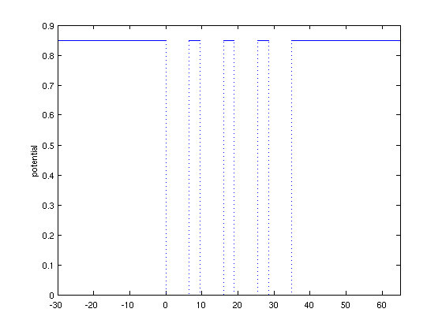
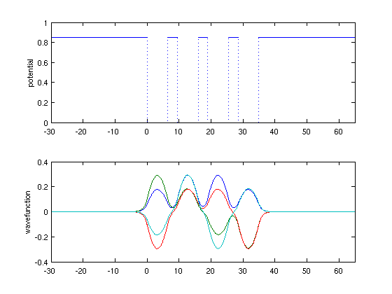
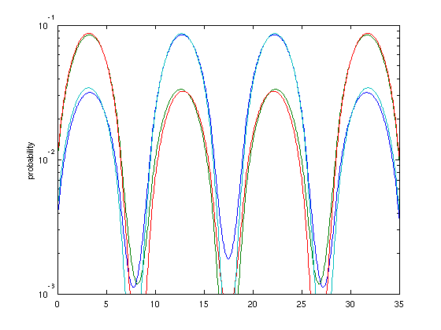
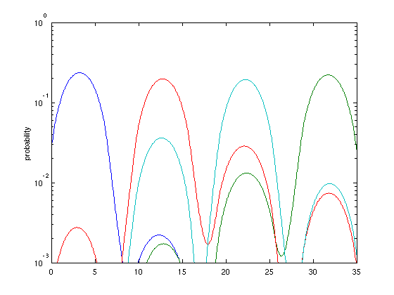

Model of a quantum dot array for solar energy
Toby Driscoll, May 7, 2011
(Chebfun example ode-eig/SolarQDA.m)
Researchers at the University of Delaware are exploring the use of quantum dot arrays (QDA) to capture solar energy. One simplified model of a QDA is as a 1-D Schrödinger eigenvalue problem. The governing equation is
-(hbar^2/2m) psi'' + U(x) psi = E psi,
where psi(x) is the wavefunction, hbar is Planck's constant divided by 2 pi, m is an effective mass, E is an allowed energy, and U(x) is a potential with wells representing the quantum dots. We will take psi=0 far from the wells to supply boundary conditions.
Here are some dimensional parameters corresponding to physical experiments. Space is measured in nm and energy is in eV.
hbar = 1.054e-34; m = [0.067 0.022]*9.109e-31*1.602e-37; % effective mass of InAs and GaAs numwell = 4; % number of wells width = 6.5; depth = 0.85; spacing = 3; % well parameters
From the well parameters we will find the boundaries of each well, then add endpoints far out to each side.
x = cumsum( [0 repmat([width spacing],1,numwell)] ); x = [ -10*spacing, x(1:end-1), x(end)+9*spacing ];
Now we create the potential U as a piecewise constant function. We use a syntax that is compact but opaque: create a cell array of the constant values, one per subinterval.
LW = 'linewidth'; lw = 1.6; vals = [repmat([depth 0],1,numwell) depth]; % [ 0 -depth 0 ... -depth 0 ] vals = mat2cell(vals,1,ones(1,2*numwell+1)); % convert to cell U = chebfun(vals,x); plot(U,LW,lw), ylabel('potential') xlim(x([1 end]))
The effective mass is also piecewise constant, so we go through the same motions.
vals = [repmat(m,1,numwell) m(1)];
vals = mat2cell(vals,1,ones(1,2*numwell+1)); % convert to cell
emass = chebfun(vals,x);
Now we are ready to define the Schrodinger operator.
N = chebop(@(psi) -hbar^2./(2*emass).*diff(psi,2) + U.*psi, x); N.lbc = 0; N.rbc = 0;
We find the numwell lowest allowed energies and their wavefunctions. Rather than getting one isolated wavefunction "bump" per well, we see that the wells influence one another strongly.
[Psi,E] = eigs(N,numwell,0); energies = diag(E) subplot(2,1,1) plot(U,LW,lw), ylabel('potential'), xlim(x([1 end])) subplot(2,1,2) plot(Psi,LW,lw), ylabel('wavefunction'), xlim(x([1 end]))
energies =
0.2376
0.2417
0.2469
0.2513
 If we look at probability, we find that the first four modes extend significantly over all wells. This is "delocalization" or quantum tunnelling, and it means the device can conduct electricity.
clf
semilogy(Psi.^2,LW,lw), ylabel('probability'),
axis( [x([2 end-1]) 1e-3 1e-1] )
Warning: Negative data ignored Warning: Negative data ignored Warning: Negative data ignored
In practice, though, the potential wells cannot be fabricated identically. A brief experiment shows that the delocalization deteriorates even with small fluctuations in the well depths. Here we perturb by 2% variance.
vals = [repmat([depth 0],1,numwell) depth]; % [ 0 -depth 0 ... -depth 0 ] randn('state',1138) vals(2:2:end) = vals(2:2:end) + 0.017*randn(1,numwell); vals = mat2cell(vals,1,ones(1,2*numwell+1)); % convert to cell U = chebfun(vals,x);
Now we find that the wavefunctions extend significantly over just one or two wells.
N.op = @(psi) -hbar^2./(2*emass).*diff(psi,2) + U.*psi;
[Psi,E] = eigs(N,numwell,0);
energies = diag(E)
semilogy(Psi.^2,LW,lw), ylabel('probability'),
axis( [x([2 end-1]) 1e-3 1e-0] )
energies =
0.2038
0.2321
0.2413
0.2530
Warning: Negative data ignored
Warning: Negative data ignored
Warning: Negative data ignored
 References: